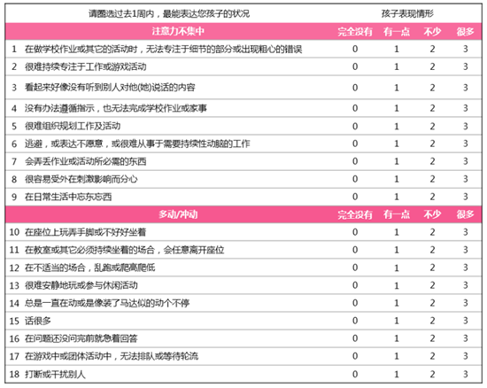
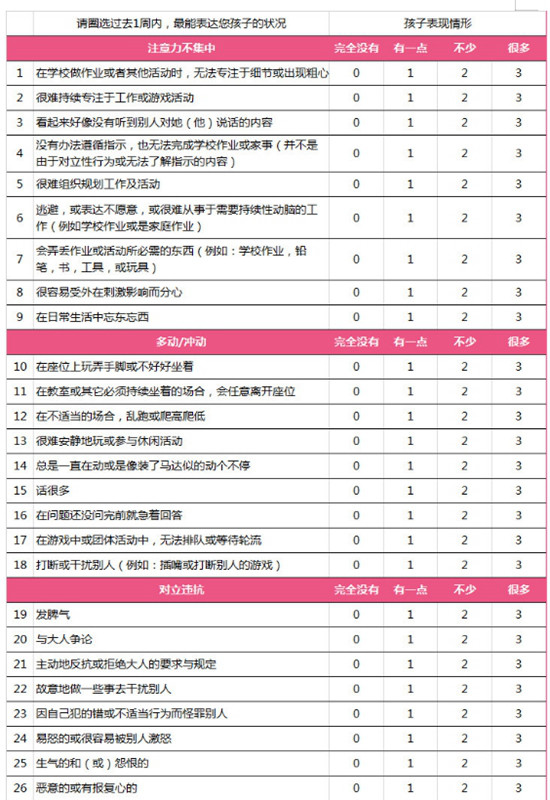

ADHD量表知多少
科普：ADHD量表知多少
每当家中那位总是活泼好动、似乎永远都闲不下来的淘气宝宝出现时，不少家长心中难免会产生疑虑：我的孩子是不是受到了注意力缺陷多动障碍（ADHD）的困扰？每当这样的疑虑浮现，家长们都会毅然决然地带孩子前往医院，希望能够得到专业的诊断和建议。而在这个过程中，家长们几乎都会遭遇一个共同的场景——那就是按照医生的要求，认真填写一份关于ADHD症状评估的量表。
我们深知，作为父母，是与孩子朝夕相处、情感最为深厚的人。在日常的点滴生活中，父母们对孩子的每一个动作、每一个表情都观察得细致入微。因此，当需要评估孩子的行为时，父母评定量表无疑是其中最为常用且有效的方法之一。它凭借着家长们的细致观察和深刻了解，为孩子的行为模式描绘出了一幅幅真实而生动的画面。
内容：SNAP-IV-18量表详情
而在众多评估量表中，SNAP-IV量表以其全面性和准确性，成为了目前ADHD筛选、辅助诊断和治疗后疗效评估的常用工具之一。这个量表通过一系列精心设计的问题，全面覆盖了ADHD的主要症状，包括注意力不集中、冲动和多动等方面。其中，18项SNAP-IV（SNAP-IV-18）和26项SNAP-IV（SNAP-IV-26）等版本更是被广泛应用，成为了医生们让家长填写的主要选择。这些量表不仅有助于医生更准确地了解孩子的症状，还能为后续的治疗提供有力的依据。

表1. SNAP-IV-18的具体内容

表2. SNAP-IV-18的具体内容
从专业的角度看：SNAP-IV量表
SNAP-IV量表（即斯奈思-康纳斯父母评定量表）是用于评估儿童青少年注意缺陷多动障碍（ADHD）症状的重要工具。其中，SNAP-IV-18版本与SNAP-IV-26版本各有侧重，但都基于相似的评分逻辑。
具体来说，SNAP-IV-18版本被精心划分为两个主要部分。首先，第1项至第9项重点关注行为与注意力的关联性，主要衡量个体在日常学习和活动中是否能够集中注意力、维持持久的关注以及是否容易被外界事物分散注意力。而第10项至第18项则侧重于评估个体的多动和冲动行为，如是否频繁地变换活动、难以静坐以及是否常常不假思索地行动。
相比之下，SNAP-IV-26版本则更为详尽。它由26个条目组成，其中前两部分与SNAP-IV-18版本的内容完全一致，但增加了第三部分，即第19项至第26项。这一新增部分主要关注儿童青少年的对立违抗行为，包括是否经常与权威人士（如父母、老师）发生冲突、是否经常拒绝遵守规则以及是否常常表现出挑衅或敌对的态度。
无论是SNAP-IV-18还是SNAP-IV-26版本，其评分方式都遵循0~3分的四级评分系统。其中，0分表示该症状在个体身上完全没有出现，而3分则表示该症状在个体身上表现得非常明显和频繁。在计分时，通常采取计算各分量表项目的均值（即分量表总分除以项目数）的方法。对于SNAP-IV-18版本，由于每个分量表包含9个项目，因此需要将分量表总分除以9来得到均值。而对于SNAP-IV-26版本，前两部分同样如此，而第三部分则需要将总分除以7（因为包含7个项目）。一般来说，如果得分小于1，则被认为是在正常范围内，表明个体在相应症状上的表现并不显著。
填写量表的注意事项
在填写SNAP-IV量表时，家长作为与孩子日常互动最为频繁的人，其评估结果对于了解孩子的ADHD症状至关重要。以下是家长在填写量表时需要特别注意的几点：
-
1.选择最合适地填写人：谁平时管理孩子的学习和生活比较多，最好就由这位家长来填写量表。这是因为只有经常与孩子相处，才能更准确地观察到孩子的行为模式，从而做出更为客观的评估。
-
2.保持客观评估：在填写量表时，家长需要尽可能地保持客观和公正。不要过分强调孩子的问题，也不要因为个人情感而忽略或不愿承认孩子的问题。只有真实地反映孩子的行为，才能为医生提供准确的诊断依据。
-
3.结合老师评价：老师作为孩子在学校中的监护人，对孩子的行为也有着深入的观察和了解。因此，如果条件允许的话，家长可以请老师帮忙填写SNAP-IV量表教师版。老师的评价往往更为客观，并且能够从不同的角度提供关于孩子行为的信息，从而更全面地了解孩子的状况。
温馨提示
在ADHD（注意缺陷多动障碍）的诊治过程中，SNAP-IV量表扮演着至关重要的角色。这份量表不仅能帮助医生明确孩子是否患有ADHD的症状，还能有效地评估病情的严重程度，以及在治疗后症状的改善程度。它为我们提供了一个标准化的工具，使得对孩子的评估更加客观、准确。
因此，我们强烈建议家长在ADHD的诊治过程中使用SNAP-IV量表。然而，需要强调的是，家长们在填写量表时应格外谨慎，务必在专业医院专科医生的指导和监督下完成。这是因为虽然SNAP-IV量表是一份专业的评估工具，但其解读和评估结果需要专业的医学知识。只有在医生的协助下，我们才能确保量表填写的准确性，从而得到更准确的诊断结果和治疗建议。
总之，填写SNAP-IV量表是一个需要认真对待的过程。家长需要保持客观、公正的态度，结合自身的观察和老师的评价，为孩子提供准确的评估结果。这将有助于医生更准确地了解孩子的状况，从而制定出更为有效的治疗方案。
参考文献
1.Swanson JM,etal. JAm Acad Child Adolesc Psychiatry. 2001
Feb;40(2):168-79.
2.郑毅, 刘靖主编. 中国注意缺陷多动障碍防治指南(第二版). 中华医学电子音像出版社.
2015.

- 科普 ADHD儿童情况
- 指南 中文易读指南
- 数据 有关多动症情况的数据
- 科研 对多动症的科研成果
- 测试 ADHD量表 [点击测试]